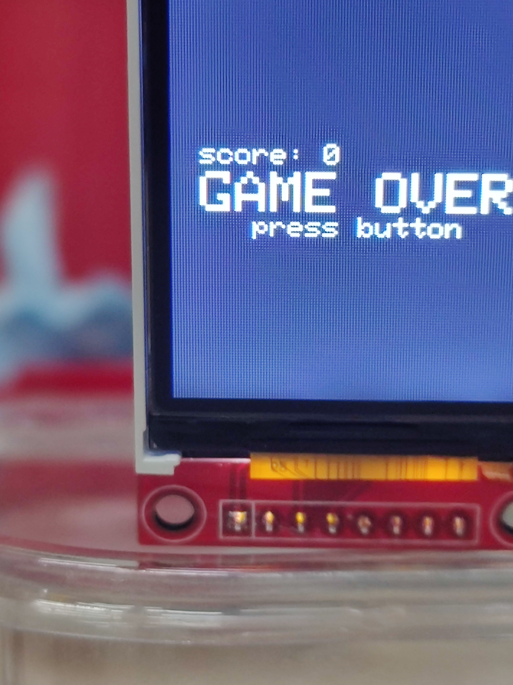

05. Flappy Bird για Arduino Uno + TFT ST7735
Arcade κατασκευή που υλοποιεί έναν απλοποιημένο κλώνο του Flappy Bird σε Arduino Uno, με γραφικά σε έγχρωμη TFT οθόνη 1.8" και έλεγχο με ένα μόνο κουμπί.
Περιγραφή
Το project βασίζεται στην αρχική δουλειά του Themistokle "mrt-prodz" Benetatos, με προσαρμογές στη συνδεσμολογία του κουμπιού και βελτιώσεις στον κώδικα ώστε η απεικόνιση στην οθόνη να είναι σταθερή και καθαρή.
Ολοκλήρωση της κατασκευής στον Σύλλογο Τεχνολογίας Θράκης
Ομάδα Κατασκευής: Δημήτρης Κ., Γιάννης Γ., Άρης Τ.
Α. Λειτουργίες λογισμικού
- Γρήγορη ανανέωση γραφικών μέσω SPI
- Χρήση βιβλιοθηκών Adafruit_GFX και Adafruit_ST7735
- Απλή λογική χειρισμού με ένα push button
- INPUT_PULLUP για απλούστερη και πιο καθαρή καλωδίωση
Β. Υλικά
- Arduino Uno (ATmega328P)
- ST7735 TFT 128x160 (SPI)
- Breadboard
- 10x Dupont καλώδια
- 1x Push button
- Τροφοδοσία μέσω USB
Γ. Συνδεσμολογία TFT ST7735
- VCC → 5V
- GND → GND
- CS → D10
- RESET → D8
- D/C → D9
- MOSI → D11
- SCK → D13
- LED → 3.3V
Δ. Συνδεσμολογία κουμπιού
- Button Pin A → D2
- Button Pin B → GND
Η υλοποίηση αξιοποιεί την εσωτερική pull-up αντίσταση του Arduino, οπότε δεν απαιτείται εξωτερική αντίσταση 10kOhm.
Ε. Σημαντική σημείωση hardware
Πολλά TFT modules λειτουργούν εσωτερικά σε λογική 3.3V. Ελέγξτε τα τεχνικά χαρακτηριστικά του συγκεκριμένου module σας και χρησιμοποιήστε level shifting όπου απαιτείται.
Παρουσίαση
Video λειτουργίας: Flappy Bird on Arduino (MP4)
Φωτογραφίες

